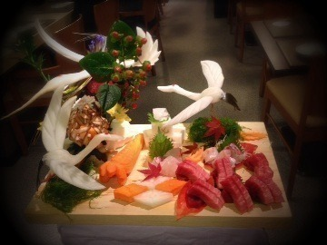

せっちゃん、幸奈が
卒業することを発表しました。
せっちゃんは
夢に向かっての前向きな卒業。
見た目のクールなところから
想像がつかないくらい天然で
可愛いところ。
彼女は本当に魅力的です。
せっちゃん次への
ステップアップだね！
幸奈、仕事終わりに一緒に帰って
喋ること多かったんだ。
幸奈はすごく控えめで優しいけど、
ライブに出てパワフルにダンスを
踊ってる姿が印象的だった。
学業頑張ってたの知ってる。
その頑張ってる姿を見て
刺激をもらってました。
夢だったり目標を持つことって
素敵なことだなと改めて感じました。
私もがんばる！
一緒に活動できなくなるのは
寂しいけどメンバーであることに
変わりない！大切な仲間です。
ずっと応援してます。
卒業おめでとう！
17日、明るい気持ちで
2人のこと送り出したいな。
.........
朝起きたら鼻と耳と手足がひえひえ。
最近は外に出ると顔が寒いから
こうやって首回りを
ふわふわぐるんぐるんにします。
最近は歌収録をしました！
ばーれえったー
そして
7th特典の詳細が発表されました。
今回は個人PVです。
前作のまりっか'セブンのティーン
とは全く違った私。
本当に素敵な作品になっています！
本編はお楽しみに。
予告編が上がっていますので
是非観て下さい。
昨日は京都から遊びに来てる
おじいちゃんおばあちゃん
家族みんなでお食事。

おばあちゃんのあるお祝いを...^^
素敵なお料理がたくさんでした。
初めてホオズキを食べたの。
秋の味覚。不思議な味。
美味しかった！
今、学校でダンスやってるの！
発表会があるのだけど、
3年生最後の行事になるから
気合入ってる！
照明等の構成考えなきゃ〜
おやすみなさい。
まりか